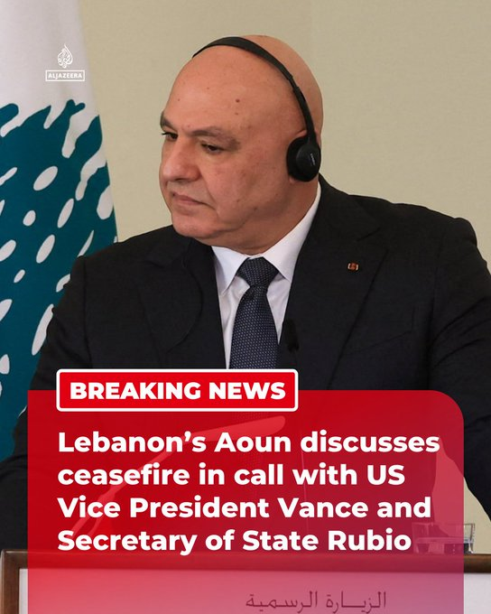

@AJENews
📝 原文: BREAKING: Lebanese President Joseph Aoun has discussed a ceasefire in a call with US Vice President JD Vance and Secretary of State Marco Rubio, the presidency says.More onhttp://Aljazeera.com
🇨🇳 译文: 突发新闻：总统府表示，黎巴嫩总统约瑟夫·奥恩在与美国副总统万斯和国务卿马可·卢比奥的通话中讨论了停火问题。更多信息请访问 http://Aljazeera.com


🕒 2026-06-23T15:33:23+00:00